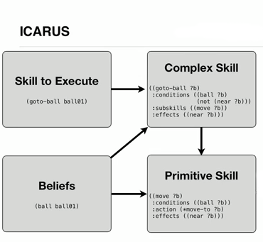
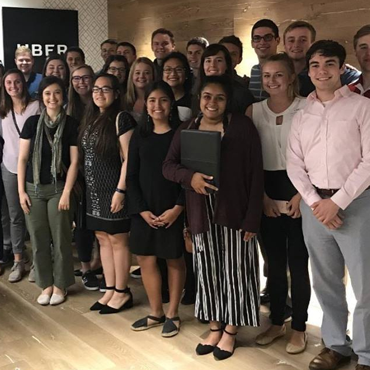

email copied to clipboard
Academic Societies
- Honors Program
- Phi Kappa Phi
- Eta Kappa Nu
Study Abroad
Spent 6 months in Australia studying engineering and business courses Spring 2018
University of Kansas
Computer Science - Business
Class of Spring 2020
Engineering GPA:3.97
Overall GPA:3.93
Transcript
Good Through Fall 2018
Relevant Coursework
- Data Structures
- Theory Of Comp
- Information Security
- Systems Design
About
Undergraduate research on ICARUS Cognitive Architecture. Worked with other graduate researchers and Dr. Dongkyu Choi on learning fundementals, CLISP, and the high-level architecture. Worked primarily within the inference module.
Research
ICARUS Cognitive Architecture
Impacts
Rebuilt inference module to distinguish between perceptions and generated beliefs. This allowed to include additional information about sensory inputs.
Designed and implemented a goals sorter. Allowed the system to periodically update current goals based on interdependencies and priorities. Recognized and handled cyclical dependencies.
About
The SELF Program develops passionate engineering graduates who are goal-oriented, business-minded leaders. An ongoing four-year personal development program rigourously trains exceptional graduates.
The Program recruits, selects, and financially supports Approximately 20 out of 590 selected to be Fellows each year.
SELF Program
Summer 2018 visit to UBER Seattle
This Fall
Organized and ran a regional highschool design competition to expose diverse students to STEM. 400+ attendees and $15,000 awards. Event entirely planned by the Junior class of Fellows.
Other Focuses:
- Company Engagement
- Entrepreneurship
- Charity
- Personal Development
University of Kansas
Computer Science - Business
Class of Spring 2020
Engineering GPA:3.97
Overall GPA:3.93
Research
ICARUS Cognitive Architecture
Worked with Dr. Dongkyu Choi to develop goal sorter for inference module. Helped with overhaul of inference module to accomodate native perceptions differently than generated beliefs.
SELF Program
SELF Engineering Leadership Fellows
The SELF Program to develop students into goal-oriented, business-minded leaders. An ongoing four-year personal development program rigourously trains exceptional engineering graduates.
Selected as 1 of 25 distinguished students for the 2020 cohort.